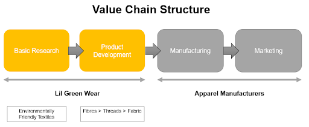
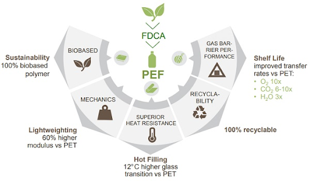

Lil Green Wear will establish business locally through different stages. Focusing on a B2B model, catering to industrial partners such as uniform manufacturers by offering PEF textiles and other environmentally friendly textiles produced from our R&D efforts.
Our company selected Polyethylene Furanoate (PEF) due to its superior barrier, mechanical and thermal properties. Currently in the Singapore apparel market, there is a lack of eco-friendly textiles able to integrate into current PET recycling streams and meeting cost expectations without negative impacts. We pride ourselves in providing superior quality eco-friendly textiles at affordable prices with maximal benefits for everyone. Conversion of industrial wastes into valued products within a closed lifecycle loop.
There are currently no direct competitors of eco-friendly textiles in the apparel industry in Singapore. This may be due to the many challenges faced by green suppliers and manufacturers. Most green suppliers and manufacturers struggle to keep up with environmental commitment especially when there is high investment and low return involved in green initiatives. This could be the biggest deterrence faced by our predecessors. Green business may not be economically beneficial in the short-term. Therefore, only organisations with stronger financial capabilities are able to rise up and reap long term benefits from the collaboration. Here are common crucial barriers of entry for green textiles in Singapore
- Absence of reward system
- Lack of new technology, materials and processes
- Lack of economic benefits
- Reluctance of support by supply chain partners
Our competitors generally offer lower priced textiles and the manufacturing processes are situated in lower-wage countries compared to Singapore such as Malaysia, Indonesia and China. However, they bring about substantial pollution with the current source of textiles derived from cotton and polyester. Importantly, financial incentives can be a good reward system from the government body to encourage suppliers in taking initiatives towards green management. The end consumers are typically willing to pay a little more for green products and services.
Our company will position our products on a �More for More� basis. We will provide superior quality textiles from a technology, using current horticulture wastes in Singapore. Concurrently, we will work towards being self-sufficient by performing continuous R&D on other eco-friendly materials. By converting wastes into valuable products, Lil Green Wear will be able to manufacture in the long run, in terms of supply and demand as millennial generations with purchasing power will have high expectations that greatly favours businesses operating sustainably. There are many massive apparel brands such as H&M, Gap, ASOS and Arcadia who have signed up to �Fashion Love by Forest�, a non-profit environmental group which commits companies to using fabrics without deforestation. These major players in apparel and footwear serve as good partners to collaborate with for PEF materials to infiltrate, ideal for each of their environmentally sustainable missions.
Strong Support from the Singapore Government
It is crucial for the Singapore Government to spearhead movements towards environmental friendliness. The required supportive actions are in the form of grants and green legislation to keep our business ecosystem intact. Encouraged selection of PEF textiles with long-term contracts by apparel manufacturers with headquarters based in Singapore will be acquired with this.
Quality Assurance and Cost Effectiveness
Assurance of quality must be demonstrated to all parties. Supporting evidence from Avantium can be located for relevant use. Prototype production with the licensed technology and evaluation of production processes in our textile factories can be assessed for further supplementation.
Positive Ecosystem Impacts and Recyclability
Implementation of PEF into local recycling facilities handling PET should be tested. Negative impacts should not be demonstrated in this process. This factor will differentiate us from other textile producers.
Continuous R&D for optimisations or inventions of novel technologies
Sustaining continuous pursuit of R&D in environmentally friendly materials is crucial for our company to stay ahead in the textile industry. Therefore, innovating textiles with desirable qualities, affordability and recyclability forms an important criteria in the survival and growth of our business.
Strengths
- Our textiles are biodegradable, recyclable and environmentally sustainable. Closed product life cycle loop
- Compatible with PET facilities, save cost on equipment
- Trained and knowledgeable personnel, helps to enhance our own R&D processes
Weaknesses
- No presence or reputation in the market
- Initial high costs and thus possible increased prices
- Possible funding problems
- Difficulty in obtaining raw materials
Oppurtunities
- Government grants can support our venture
- Easier market penetration in Singapore due to emphasis on national green efforts (presence of imminent waste problems and limited space)
- Apparel is always in high demand
- Chance of getting promotions through the press and media
Threats
- Lack of government support will impede our company growth (lack of recommendations, regulations, enabling incentives for our customers)
- Increased media attention can draw more competitors to imitate our product
- Possible unattractive perceptions of incentives provided for the customers
- General negative public attitude towards our new idea if the textile does not possess promised qualities
- Unwillingness for apparel manufacturers to switch to our textiles